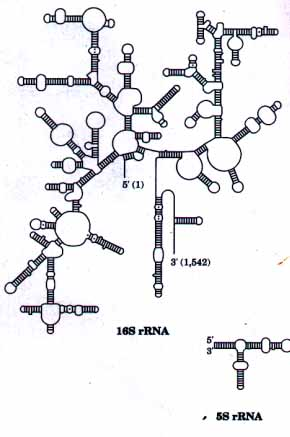
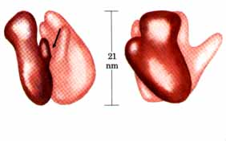
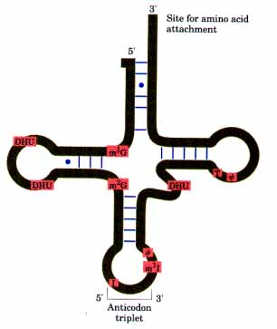
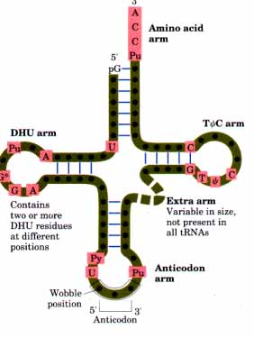
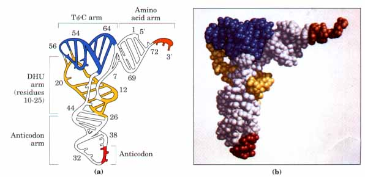
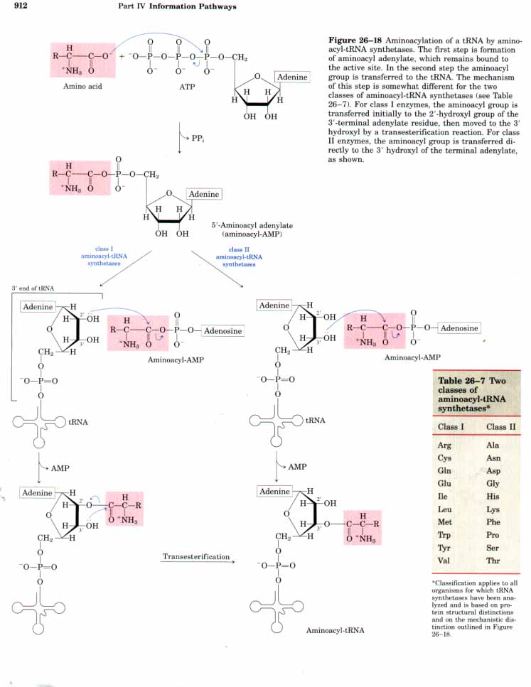
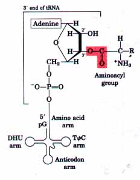
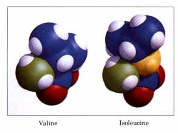
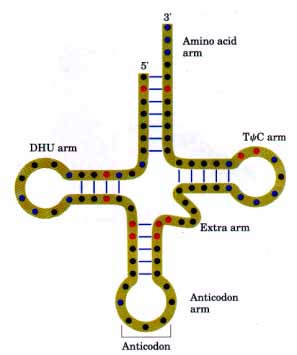
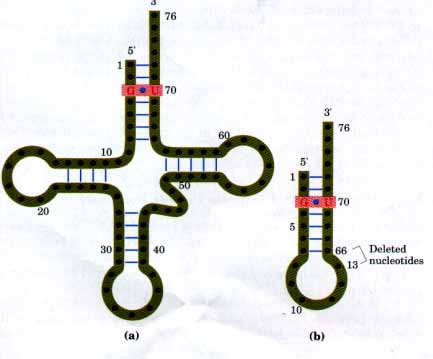

| Mg2+ | ||
| Amino acid + tRNA + ATP | aminoacyl-tRNA + AMP + PPi |
Each E. coli cell contains 15,000 or more ribosomes, which make up almost a quarter of the dry weight of the cell.
Bacterial ribosomes contain about 65% rRNA and about 35% protein. They have a diameter of about 18 nm and a sedimentation coefficient of 705. Bacterial ribosomes consist of two subunits of unequal size (Fig. 26-12), the larger having a sedimentation coefficient of 50S and the smaller of 305. The 50S subunit contains one molecule of 5S rRNA, one molecule of 23S rRNA, and 34 proteins. The 30S subunit contains one molecule of 16S rRNA and 21 proteins. The proteins are designated by numbers. Those in the large 50S subunit are numbered Ll to L34 (L for large) and those in the smaller subunit Sl to S21 (S for small). All the ribosomal proteins of E. coli have been isolated and many have been sequenced. Their variety is enormous, with molecular weights from about 6,000 to 75,000.
| The sequences of nucleotides in the
rRNAs of many organisms have been determined. Each of the
three single-stranded rRNAs of E. coli has a specific
three-dimensional conformation conferred by intrachain
base pairing. Figure 26-13 shows a postulated
representation of the 16S and 5S rRNAs in a maximally
base-paired conformation. The rRNAs appear to serve as a
framework to which the ribosomal proteins are bound. In a method pioneered by Masayasu Nomura, the ribosome can be broken down into its RNA and protein components, then reconstituted in vitro. When the 21 different proteins and the 16S rRNA of the 30S subunit are isolated from E. coli and then mixed under appropriate experimental conditions, they spontaneously reassemble to form 30S subunits identical in structure and activity to native 30S subunits. Similarly, the 50S subunit can assemble itself from its 34 proteins and its 5S and 23S rRNAs, providing the 30S subunit is also present. Each of the 55 proteins in the bacterial ribosome is believed to play a role in the synthesis of polypeptides, either as an enzyme or as a structural component in the overall process. However, the detailed function of only a few of the ribosomal proteins is known. The two ribosomal subunits have irregular shapes. The threedimensional structures of the 30S and 50S subunits of E. coli ribosomes (Fig. 26-12) have been deduced from x-ray diffraction, electron microscopy, and other structural methods. The two oddly shaped subunits fit together in such a way that a cleft is formed through which the mRNA passes as the ribosome moves along it during the translation process and from which the newly formed polypeptide chain emerges (Fig. 26-14). The ribosomes of eukaryotic cells (other than mitochondrial and chloroplast ribosomes) are substantially larger and more complex than bacterial ribosomes (Fig. 26-12). They have a diameter of about 23 nm and a sedimentation coefficient of about 805. They also have two subunits, which vary in size between species but on average are 60S and 405. The rRNAs and most of the proteins of eukaryotic ribosomes have also been isolated. The small subunit contains an 18S rRNA, and the large subunit contains 5S, 5.85, and 28S rRNAs. Altogether, eukaryotic ribosomes contain over 80 different proteins. (In contrast, the ribosomes of mitochondria and chloroplasts are somewhat smaller and simpler than bacterial ribosomes.) |
 Figure 26-13 Predicted folding patterns in E. coli 16S and 5S rRNAs, based on maximizing the potential intrastrand base pairing  Figure 26-14 Two different views of models of an E. coli ribosome, showing the relationship between the 30S and 50S subunits. The arrow indicates the cleft between the subunits. Masayasu Nomura |
To understand how tRNAs can serve as adapters in translating the language of nucleic acids into the language of proteins, we must first examine their structure in more detail. As shown in Chapter 12, tRNAs are relatively small and consist of a single strand of RNA folded into a precise three-dimensional structure (see Fig. 12-27a). In bacteria and in the cytosol of eukaryotes, tRNAs have between 73 and 93 nucleotide residues, corresponding to molecular weights between 24,000 and 31,000. (Mitochondria contain distinctive tRNAs that are somewhat smaller.) As we have noted earlier in this chapter, there is at least one kind of tRNA for each amino acid; for some amino acids there are two or more specific tRNAs. At least 32 tRNAs are required to recognize all the amino acid codons (some recognize more than one codon), but some cells have many more than 32.
Many tRNAs have been isolated in homogeneous form. In 1965, after several years of work, Robert W. Holley and his colleagues worked out the complete nucleotide sequence of alanine tRNA (tRNAAla) from yeast. This, the very first nucleic acid to be sequenced in its entirety, was found to contain 76 nucleotide residues, ten of which have modified bases. Its complete base sequence is shown in Figure 26-15.
 |
Figure 26-15 The nucleotide sequence of yeast tRNAAla as deduced by Holley and his colleagues. The cloverleaf conformation shown here is that in which intrastrand base-pairing is maximal. In addition to A, G, U, and C, the following symbols are used for the modified nucleotides: ψ, pseudouridine; I, inosine; T, ribothymidine; DHU, 5,6-dihydrouridine; m1I, 1-methylinosine; m1G, 1-methylguanosine; m2G, N2-dimethylguanosine. The modified bases are shaded in red, and most are illustrated in Fig. 25-25. The blue lines between the parallel sections indicate base pairs. The anticodon is capable of recognizing three codons for alanine (GCA, GCU, and GCC). Other features of tRNA structure are shown in Fig. 26-16. Note the presence of G=U base pairs in both the amino acid arm (top) and the DHU arm (left), signified by a blue dot to indicate a non-Watson-Crick pairing. In RNAs guanosine is often found base-paired with uridine, although the G=U pair is not as stable as the Watson-Crick G≡C pair (Chapter 12). |
| Since Holley's pioneering studies, the
base sequences of many other tRNAs from various species
have been worked out and have revealed many common
denominators of structure. Eight or more of the
nucleotide residues of all tRNAs have unusual modified
bases, many of which are methylated derivatives of the
principal bases. Most tRNAs have a guanylate (pG) residue
at the 5' end, and all have the trinucleotide sequence
CCA(3') at the 3' end. All tRNAs, if written in a form in
which there is maximum intrachain base pairing through
the allowed pairs A=U, G≡C, and G=U (see Fig. 12-26),
form a cloverleaflike structure with four arms; the
longer tRNAs have a short iifth or extra arm (Fig. 26-16;
also evident in Fig. 26-15). The actual three-dimensional
structure of a tRNA looks more like a twisted L than a
cloverleaf (Fig. 26-17). Two of the arms of a tRNA are critical for the adapter function. The amino acid or AA arm carries a speciiic amino acid esteriiied by its carboxyl group to the 2'- or 3'-hydroxyl group of the adenosine residue at the 3' end of the tRNA. The anticodon arm contains the anticodon. The other major arms are the DHU or dihydrouridine arm, which contains the unusual nucleotide dihydrouridine, and the TψC arm, which contains ribothymidine (T), not usually present in RNAs, and pseudouridine (ψ), which has an unusual carbon-carbon bond between the base and pentose (see Fig. 25-25). The functions of the DHU and TψC arms have not yet been determined. |
 Figure 26-16 General structure of all tRNAs. When drawn with maximum intrachain base pairing, all tRNAs show the cloverleaf structure. The large dots on the backbone represent nucleotide residues, and the blue lines represent base pairings. Characteristic and/or invariant residues common to all tRNAs are shaded in red. Transfer RNAs differ in length, from 73 to 93 nucleotides. Extra nucleotides occur in the extra arm or in the DHU arm. At the end of the anticodon arm is the anticodon loop, which always contains seven unpaired nucleotides. The DHU arm contains up to three DHU residues, depending on the tRNA. In some tRNAs the DHU arm has only three hydrogen-bonded base pairs. In addition to the symbols explained in Fig. 26-15: Pu, purine nucleotide; Py, pyrimidine nucleotide; G*, guanylate or 2'-Omethylguanylate. |

Figure 26-17 The three-dimensional structure of yeast tRNAPhe deduced from x-ray diffraction analysis. It resembles a twisted L. (a) A schematic with the various arms identified in Fig. 26-16 shaded in different colors. (b) A space-filling model. Color coding is the same in both representations. The three bases of the anticodon are shown in red and the CCA sequence at the 3' end Ethe attachment point for amino acids) is shown in orange. The TψC and DHU arms are blue and yellow, respectively.

| In the first stage of protein synthesis, which takes place in the cytosol, the 20 different amino acids are esterified to their corresponding tRNAs by aminoacyl-tRNA synthetases, each of which is specific for one amino acid and one or more corresponding tRNA. In most organisms there is generally one aminoacyl-tRNA synthetase for each amino acid. As noted earlier, for amino acids that have two or more corresponding tRNAs the same aminoacyl-tRNA synthetase usually aminoacylates all of them. In E. coli, the only exception to this rule is lysine, for which there are two aminoacyl-tRNA synthetases. There is only one tRNAIJys in E. coli, and the biological rationale for the presence of two Lys-tRNA synthetases is unclear. Nearly all the aminoacyltRNA synthetases of E. coli have been isolated; all have been sequenced (either the protein itself or its gene), and a number have been crystallized. They have been divided into two classes (Table 26-7) based on distinctions in primary and tertiary structure and on differences in reaction mechanism, as detailed below. |  Figure 26-19 General structure of aminoacyltRNAs. The aminoacyl group is esterified to the 3' position of the terminal adenylate residue. The ester linkage that both activates the amino acid and joins it to the tRNA is shaded red. |
The overall reaction catalyzed by these enzymes is
| Mg2+ | |||
| Amino acid + tRNA + ATP | aminoacyl-tRNA + AMP + PPi |
The activation reaction occurs in two separate steps in the enzyme active site. In the first step, an enzyme-bound intermediate, aminoacyl adenylate (aminoacyl-AMP) is formed by reaction of ATP and the amino acid at the active site (Fig. 26-18). In this reaction, the carboxyl group of the amino acid is bound in anhydride linkage with the 5'phosphate group of the AMP, with displacement of pyrophosphate.
In the second step the aminoacyl group is transferred from enzyme-bound aminoacyl-AMP to its corresponding specific tRNA. As shown in Figure 26-18, the course of this second step depends upon the class to which the enzyme belongs (Table 26-7). The reason for the mechanistic distinction between the two enzyme classes is unknown. The resulting ester linkage between the amino acid and the tRNA (Fig. 26-19) has a high standard free energy of hydrolysis (OG? -29 kJ/mol). The pyrophosphate formed in the activation reaction undergoes hydrolysis to phosphate by inorganic pyrophosphatase. Thus two high-energy phosphate bonds are ultimately expended for each amino acid molecule activated, rendering the overall reaction for amino acid activation essentially irreversible:
| Mg2+ | ||
| Amino acid + tRNA + ATP | aminoacyl-tRNA + AMP + PPi |
ΔG°'≈-29 kJ/mol
The aminoacylation of tRNA accomplishes two things: the activation of an amino acid for peptide bond formation and attachment of the amino acid to an adapter tRNA that directs its placement within a growing polypeptide. As we will see, the identity of the amino acid attached to a tRNA is not checked on the ribosome. Attaching the correct amino acid to each tRNA is therefore essential to the fidelity of protein synthesis as a whole.

The potential for any enzyme to discriminate between two different substrates is limited by the available binding energy that can be derived from enzyme-substrate interactions (Chapter 8). Discrimination between two similar amino acid substrates has been studied in detail in the case of Ile-tRNAIle synthetase, which faces the molecular problem that valine differs from isoleucine only by one methylene (CH2) group. For this enzyme, activation of isoleucine (to form IleAMP) is favored over valine by a factor of 200, in the range expected given the potential contribution of binding energy from a methylene group. However, valine is incorporated into proteins in positions normally occupied by isoleucine at a frequency of only about 1 in 3,000.The difference is brought about by a separate proofreading function of Ile-tRNA synthetase; this function is also present in some other aminoacyl-tRNA synthetases. All aminoacyl-AMPs produced by IletRNA synthetase are checked in a second active site on the same enzyme, and incorrect ones are hydrolyzed. This proofreading activity reflects a general principle already seen in the discussion of proofreading by DNA polymerases (p. 822). If available binding interactions involving different groups on two substrates do not provide for a sufficient discrimination between the two on the enzyme, then this available binding energy must be used twice (or more) in separate steps requiring discrimination. Forcing the system through two successive "filters" rather than one increases the potential fidelity by a power of 2. In the case of Ile-tRNA synthetase, the first filter is the initial amino acid binding and activation to aminoacyl-AMP. The second filter is the separate active site, which catalyzes deacylation of incorrect aminoacyl-AMPs. The aminoacyl-AMP intermediates remain bound to the enzyme. When tRNAIle binds to the enzyme, the presence of Ile-AMP leads to aminoacylation of the tRNA. If Val-AMP is present on the enzyme instead, it is hydrolyzed to valine and AMP and the tRNA is not aminoacylated. Because the R group of valine is slightly smaller than that of isoleucine, the Val-AMP fits the hydrolytic (proof reading) site of the Ile-tRNA synthetase, but Ile-AMP does not.
In addition to proofreading after formation of the aminoacyl-AMP intermediate, most aminoacyl-tRNA synthetases are also capable of hydrolyzing the ester linkage between amino acids and tRNAs in aminoacyl-tRNAs. This hydrolysis is greatly accelerated for incorrectly charged tRNAs, providing yet a third filter to enhance the fidelity of the overall process. In contrast, in a few aminoacyl-tRNA synthetases that activate amino acids that have no close structural relatives, little or no proofreading occurs; in these cases the active site can sufficiently discriminate between the proper substrate amino acid and incorrect amino acids.
The overall error rate of protein synthesis (~1 mistake per 104 amino acids incorporated) is not nearly as low as for DNA replication, perhaps because a mistake in a protein is erased by destroying the protein and is not passed on to future generations. This degree of fidelity is sufficient to ensure that most proteins contain no mistakes and that the large amount of energy required to synthesize a protein is rarely wasted.
An individual aminoacyl-tRNA synthetase must be specific not only for a single amino acid but for a certain tRNA as well. Discriminating among several dozen tRNAs is just as important for the overall fidelity of protein biosynthesis as is distinguishing among amino acids. The interaction between aminoacyl-tRNA synthetases and tRNAs has been referred to as the "second genetic code," to reflect its critical role in maintaining the accuracy of protein synthesis. The "coding" rules are apparently more complex than those in the "first" code.
Figure 26-20 summarizes what is known about the nucleotides involved in recognition by some or all aminoacyl-tRNA synthetases. Some nucleotides are conserved in all tRNAs and therefore cannot be used for discrimination. Nucleotide positions that are involved in discrimination by the aminoacyl-tRNA synthetases have been identified by the fact that changes at those nucleotides alter the enzyme's substrate specificity. These interactions seem to be concentrated in the amino acid arm and the anticodon arm, but are also located in many other parts of the molecule. The conformation of the tRNA (as opposed to its sequence) can also be important in recognition.
Some aminoacyl-tRNA synthetases recognize the tRNA anticodon itself. Changing the anticodon of one tRNAval from UAC to CAU makes this tRNA an excellent substrate for Met-tRNA synthetase. The ValtRNA synthetase will similarly recognize a modified tRNAMet in which the anticodon has been changed to UAC. Recognition by aminoacyltRNA synthetases of other tRNAs (about half of them, including those for alanine and serine) is affected little or not at all by changes at the anticodon. In some cases ten or more specific nucleotides are involved in recognition of a tRNA by its specific aminoacyl-tRNA synthetase (Fig. 26-20). In contrast, across a range of organisms from bacteria to humans the primary determinant for tRNA recognition by the AlatRNA synthetases is a single G=U base pair in the amino acid arm of tRNAAla (Fig. 26-21a). A short RNA with as few as seven base pairs arranged in a simple hairpin minihelix is efficiently aminoacylated by the Ala-tRNA synthetase as long as the RNA contains this critical G=U (Fig. 26-21b). .
 Figure 26-20 Known positions in tRNAs recognized by aminoacyl-tRNA synthetases. Positions in blue are the same in all tRNAs and therefore cannot be used to discriminate one from another. Other positions are known recognition points f'or one (red) or more (green) tRNA synthetases. Structural features other than sequence are important for recognition by some tRNA synthetases. |
 Figure 26-21 (a) The tRNAAla structural elements recognized by the Ala-tRNA synthetase are unusually simple. A single G=U base pair (red) is the only element needed for specific binding and aminoacylation. (b) A short synthetic RNA minihelix, which has the critical G=U base pair but lacks most of the remaining tRNA structure, is specifically aminoacylated with alanine almost as efficiently as the complete tRNAAla |
A complete understanding of the structural factors guiding these interactions remains an area of very active investigation. The solution of the crystal structures of two aminoacyl-tRNA synthetases (Gln and Asp) complexed with their cognate tRNAs and ATP is an important advance (Fig. 26-22). The relatively simple alanine system described above may be an evolutionary relic of a period when RNA oligonucleotides (ancestors to tRNA) were aminoacylated in a primitive system for protein synthesis.